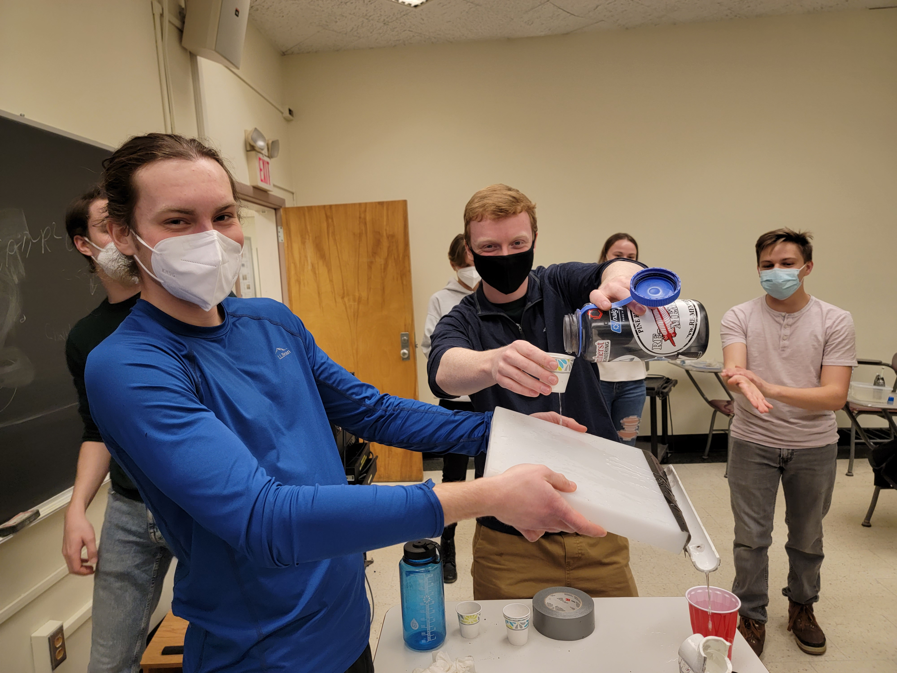
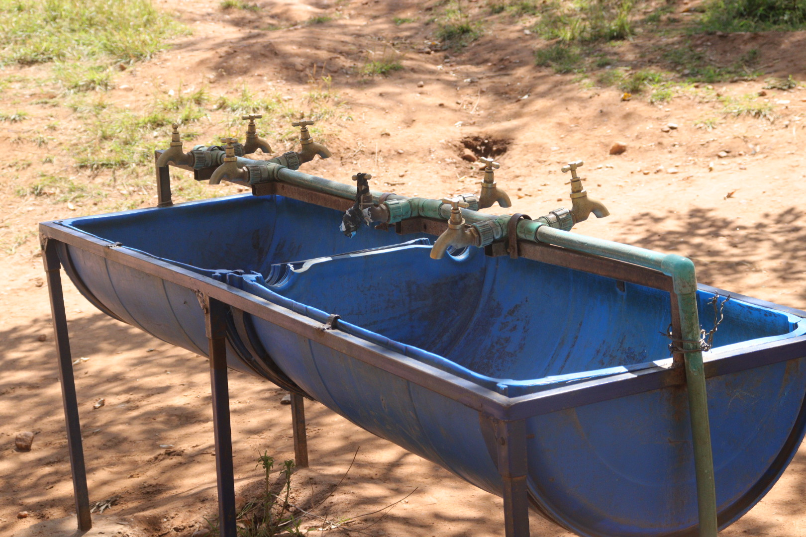
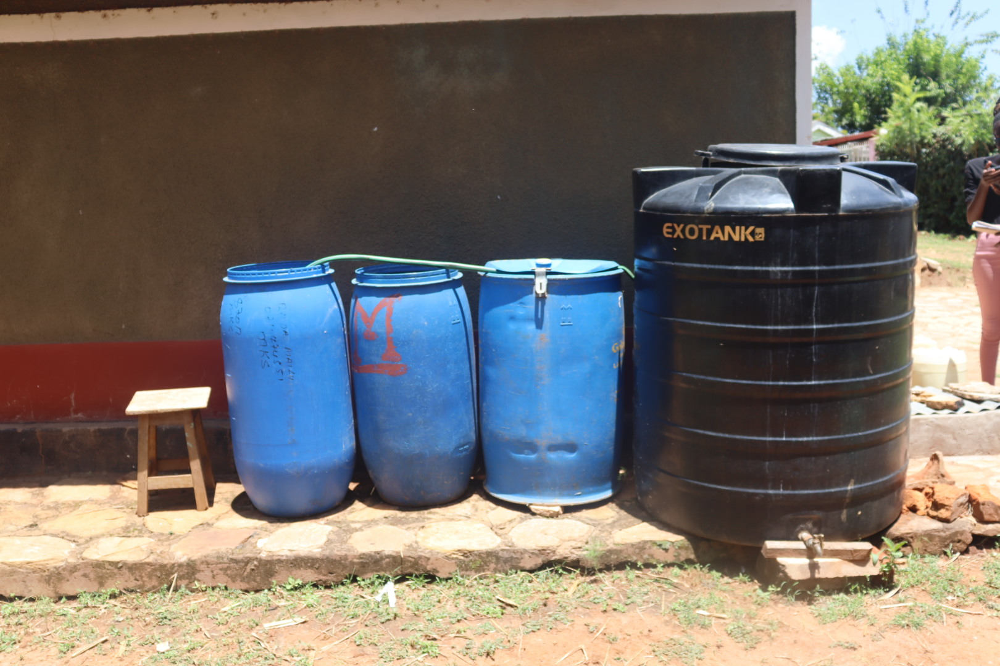
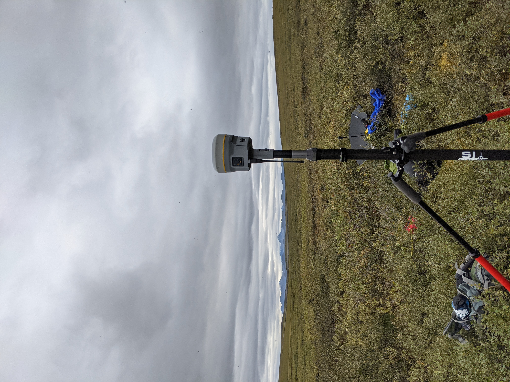

Projects
Lead in Drinking Water in Massachusetts Schools and Childcare Centers
A statewide program in Massachusetts, facilitated by The Massachusetts Department of Environmental Protection (MassDEP) and named the Assistance Program for Lead in School Drinking Water, began in 2016 to encourage public schools and EECFs to test their drinking water for lead and copper contamination. The program ran in 2016–2017 and again in 2017–2018. In January 2020, MassDEP initiated the ongoing expanded assistance program (EAP), which is focused on EECFs, adds private facilities, and assesses lead only. These programs helped schools sample water at all fixtures in the building used for drinking or food preparation. Since 2021 I have been analyzing results associcated to the program, and in 2022 I joined the project team where I help with program logistics, as well as continued research and scientific communication. Highlights of my work within the program are listed below:
- Research into the success of the program and risk factors associated with elevated water lead levels, leading to a publication
- Presenting results from the studies to various organizations: UNC Water and Health Conference 2022, UMass Amherst Civil & Environmental Seminar 2023, Massachusetts Water Working Group 2023
- Center for Research on Families Undergraduate Research Award Recipient
- Lab results prepared and shared with hundreds of facilities
- Working directly with schools and childcares to design sampling plan, sample fixtures, and interpret lab results
- Direct outreach to childcare providers at conferences
Engineers Without Borders
In my freshman year at UMass I became involved with the UMass Amherst Chapter of Engineers Without Borders (EWB). EWB USA is an organization partnering with communities around the world to meet their basic human needs and at UMass we have projects based in Kenya, Ghana, and locally. In my time with EWB-UMass, I was mostly involved with the Kenya project where we worked with Nguluni, Kenya to implement rainwater catchment systems, handwashing stations, and expand their distribution system. As one of the project managers from 2021-2022 I helped facilitate weekly meetings with our members, oversaw a remote monitoring trip thanks to a partnership with students from the University of Nairobi, and submitted technical reports to EWB-USA. I am very grateful for the experiences I had and all of the amazing people that I met during my four years with EWB-UMass. You can find out more about the projects or donate to the UMass chapter here.

Constructing Model First Flush Tanks at a Project Meeting

Handwashing Station

Rainwater Catchment System
Integrating Geosciences and Engineering in the Arctic
Integrating Geosciences and Engineering in the Arctic (IGEA) is a course designed and advised by Dr. Colin Gleason at the University of Massachusetts Amherst. It was a two semester long (spring and fall) course designed for undergraduate students in the College of Engineering and the Department of Geosciences to prepare and send students to conduct research in the Arctic. I was invloved with IGEA during my junior-senior years at UMass, working within a team of six undergraduates to research beaded streams , hydrological features unique to permafrost regions. We constructed a research plan during the spring, spent several weeks in the Alaskan North Slope over the summer, and analyzed all our data, wrote a report, and presented our results in the fall. For me, it was one of my first experiences conducting research and an amazing learning experiennce as I describe here. Some of my roles and accomplishments are listed below
- Science Lead: Leading the crew towards forming and achieving their science goal, and overseeing measurement plan in the field
- Data Analyst: After returing from the field I was in charge of analyzing cleaned data and preparing figures and tables for the article
- Medical Lead: In charge of developing medical kit and medical prevention and aid in the field, trained as a Wilderness First Responder
- Scientific communication through a poster session and Q&A, helping to moderate social media accounts, and communicating with writers from external sources
- Direct outreach to childcare providers at conferences

GNSS set up in the field

Beaded stream with a waterfall

Alaskan wilderness